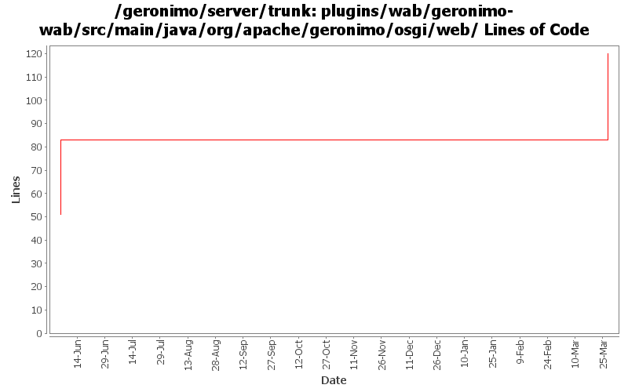

[root]/plugins/wab/geronimo-wab/src/main/java/org/apache/geronimo/osgi/web

| Author | Changes | Lines of Code | Lines per Change |
|---|---|---|---|
| Totals | 5 (100.0%) | 69 (100.0%) | 13.8 |
| gawor | 1 (20.0%) | 37 (53.6%) | 37.0 |
| xuhaihong | 4 (80.0%) | 32 (46.4%) | 8.0 |
GERONIMO-6311: Wait for web bundles to initialize fully before allowing application update to avoid a deadlock
37 lines of code changed in 1 file:
a. Update the WebAttributeNames in the geronimo-web module to WebApplicationConstants
b. Update the WebApplicationConstants in the geronimo-wab module to WABApplicationConstants
32 lines of code changed in 4 files: